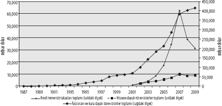
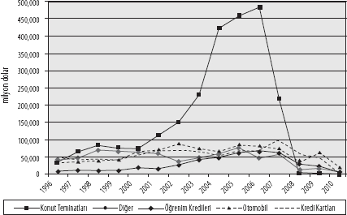

Kaynak: IMF[31]
Dick Bryan ve Michael Rafferty
Finansal türev ürünler, son finans krizinin baş şüphelisi olarak gösterilmekte. Türev ürün analiziyle uğraşmayanlar, bu finans aracının gücü ve finansal riskleri gizleme yeteneğiyle ilk olarak iki yüzyılın buluşma noktasında, Long Term Capital Management, Enron ve WorldCom şirketlerinin başına gelenlerde karşılaştılar muhtemelen. Ardından, 2007-08'in subprime finans krizi gelecek, türev ürün temelli bir süreç olan "menkul-kıymetleştirme", yağmacı subprime kredilerin dünya genelindeki dağıtıcısı sıfatıyla öne çıkacaktı. Bir adım sonra, eldeki kartları şirketlerin iflasına oynamak anlamına gelen kredi borcu takas sözleşmeleri geldi. Bu şekilde başkalarının felaketine yatırım yapma olanağını veren türev ürünler, kısa sürede herkes için felakete neden olacak gibiydi. Hemen herkesin bu kâğıtları kriz taşıyıcısı mikrop olarak görmesi şaşırtıcı değil. Türev ürünler, Warren Buffet'in sıkça alıntılanan tanımlamasıyla, finansal kitle imha silahlarıydı.[1]
Vurulan bu damgayı gerekçelendirmek de hiç güç sayılmaz. Ancak, duruma böyle basit bir açıklama getirmek, yargıya gereğinden çok daha çabuk varıvermemize ve yolumuzun üstündeki pek çok başka şeyi kaçırmamıza neden olacaktır. Küresel finans krizini sistemde meydana gelmiş bir aksama ve spekülasyon çerçevesi içinde resmetmek, bu resimde finansal türev ürünleri başköşeye oturtmak, bizlere göre verimli sonuçlar getirmeyecektir. Biz, türev ürünleri kapitalizmin yanlış uygulanması nedeniyle ortaya çıkmış bir hastalık değil, bizzat kapitalizmin bir çarpıklığı olarak değerlendiriyoruz. Bunlar, kapitalist bünyenin bir parçası ve kapitalizmdeki mülkiyet ilişkileri ile yenilik arayışının ifadesidir. Türev ürünlerin içinde barınan çelişkiler, bizzat kapitalizmin çelişkileridir.
Finansal krize getirilecek açıklamalarda, sahip olduğu matematiksel sınırlar, şeffaflık eksikliği ve "toksik" özellikleri dolayısıyla türev ürünlerin temel alınması hâlinde, muhtemelen felaketin kaçınılmaz olduğunu söyleyen bir çözümlemeye ulaşılacak, türev ürünler öncesindeki o masum, güvenli finansal ortamın geri getirilmesini hedefleyen, nostaljik bir siyasete varılacaktır. Üstelik sırtımızı bu türden yorumlara dayadığımızda, türev ürünlerin hem mevcut kriz içerisinde sahip olduğu, hem de gelecekte sergileyeceği gerçek gücü gözden kaçırmamız çok olasıdır.
Türev ürünler ticaretindeki büyüme, finansal kriz öncesinde gerçekleşti ve ne tuhaftır ki, bu ticaretin hacmi krizden hiç etkilenmedi. Aksine, büyüme kriz ertesinde de sürermiş gibi görünüyor. Kimileri, bu durumun bir sonraki çöküş için enerji birikimine yol açtığı yönünde basit çıkarımlarda bulunuyorsa da, Marksizm, geleceğe ilişkin spekülasyonlardan daha fazlasını söylemelidir bize. Kapitalizmin bugünkü durumunun ve olası geleceğinin türev ürünler eliyle nasıl şekillendirildiğine bakmak, günümüz finansal krizini bu devinim içerisine oturtmak zorundayız.
2007-08 krizine dair çözümlemelerin amacı, bir çöküş yatkınlığını tespit etmekten, kapitalizmin kırılganlığını bir kez daha açığa çıkarmaktan ibaret olmamalı (ki bu çaba, Gray'in de belirttiği gibi, sola özgü değildir).[2] Kapitalizmin, yeni sermaye birikim süreçleri inşa etmesine olanak tanıyacak uyum yeteneğine ilişkin işaretleri de aramalıyız. Bu yazı, Marx'ın kriz kuramlarından çok, kapitalist gelişmenin sınırlarını, bu sınırları zorlayan devinimleri tespit etmeye yönelik olarak yine Marx tarafından ortaya koyulmuş "başka" bir çabadan yola çıkıyor. Finans piyasaları ve diğer türev ürün piyasalarının günümüz kapitalist bünyesine nasıl dâhil olduğunu gösteren bir çözümleme sunmaya çalışacağız. Bu çaba, toplumsal açıdan ciddi sonuçlar doğurmuş son finansal krizin, yapılacak çözümlemelerde aynı ölçüde önem taşımadığını gösterebilir belki de.
Bu duruşumuzu ileri taşırken, öncelikle, sermaye birikiminin ayrılmaz bir parçası haline nasıl geldiklerini belirleyecek biçimde, türev ürünlerin doğasını ve rolünü açığa çıkaracağız. Mercek altında baktığımızda, türev ürünlerin yeni meta ve metalaştırma biçimleri sunduğunu, eskilerde sadece bir tedavül alanı olarak görülen yapılar içinde sermaye birikimine yeni ufuklar açtığını görüyoruz. Sonrasında, türev ürünlerin evrimine ve günümüz finans krizinde oynadığı role eğileceğiz. Bu rolü açıklama yolunda, yaygın kanının aksine krize türev ürünler piyasasının aşırı gelişmesinin değil, yeterince olgunlaşmamış olmasının yol açtığı savını ortaya atacağız. Gerçekten de, türev ürünler aslında sermaye birikimi için yeni bir potansiyel sunmakta. Vardığımız sonuç, 2007-08'de yaşananların bu finansal devinimden kaynaklanan bir kriz yerine, bizzat söz konusu devinimin içine girdiği bir kriz biçiminde görülebileceğini söylüyor. Kriz, bu devinimi sağlama almaktadır. Aradaki bu fark sadece çözümsel açıdan önem taşımamakta, siyasi bakımdan da düzenleyici reformlar için başka bir gündem, emek için başka bir siyasetin gerekliliğini göstermekte.
TÜREV ÜRÜN PİYASASI NEDİR VE NEDEN BU KADAR ÖNEMLİDİR?
Türev ürünler için getirilebilecek kapsayıcı, basit bir tanımlamamız yok. Geçmişte sivrilen tanımların hepsi, finansal piyasaların evrimi içerisinde hızla devre dışı kaldı.[3] Tek cümlelik bir sözlük tanımı yapılırsa, türev ürünler, fiyatı bir veya daha fazla varlığa dayanan (ya da kelimenin gerçek anlamıyla, bu varlıklardan "türetilmiş") yeni bir varlık ya da menkul kıymet olarak gösterilecektir. Bu, türev ürünlere tarihsel olarak nasıl bakıldığını ortaya koyan bir tanımsa da, daha geniş bir toplumsal bakışa ulaşma peşindeysek, bugünün şartlarında pek yarar sağlamıyor. Sözlük tarifi, sadece türev ürünlerin fiyatlandırma temelini açıklıyor; türev ürünün ne olduğunu, ya da ne yaptığını değil.
Tıpkı faiz oranları ve döviz kurları gibi türev ürünler de klasik olarak finansal ürünlerle ilişkilendirilmekle birlikte, aslında ilgilendirdiği toplumsal boyutlar yine çok büyüktür. Resmî finans piyasalarında hâlihazırda geliştirilmiş ürünlere ek olarak, gelecekte de daha pek çoğu ortaya çıkacak. Dolayısıyla, hem bugünküleri hem de gelecekteki muhtemel türev ürünleri kapsayacak bir bakış açısı sunmak, böylece gelecekteki olasılıklara dönük bir çözümleme geliştirmek önem kazanıyor.
Türev ürünler, toplumsal ve ekonomik dünyayı şimdikinden daha kesin hatlara sahip bileşenlere indirgeyecek bir yapısöküm mantığının ifadesidir. Bu bileşenlerin her birinin ölçülebilir (ancak kimi zaman tartışmaya açık ve çoğunlukla da hassas) araçlara dönüştürülebilmesi, böylelikle fiyatlandırılabilmesi ve alınıp satılabilmesi hedeflenir. Masaya yatırdığımızda, bu mantığın en az üç boyutu çıkar karşımıza:
1. ayrıştırma: toplumsal ve ekonomik dünyanın, daha fazla sayıda ve daha kesin hatlarla tanımlanmış "bileşenler"e bölünecek şekilde ayrıştırılması. Bu, temelde bir imgeleme etkinliğidir.
2. nicelleştirme: her bir bileşenin, belirlenen risk tanımlamaları temelinde ölçülebilir varlıklar olarak düzenlenmesi. Böylece, her bileşen temelde diğer bileşenlerle karşılaştırılabilir hale gelir. Sonuçta, toplumsal ve ekonomik dünyadaki belirsizlikler, yani riskler, farklı bileşen ve niteliklerin birbiriyle karşılaştırılmasına olanak tanıyan bir ölçüm birimi ile ifade edilir. Bu, esasında riskin bilinçli olarak düzenlenip hesaplandığı bir üretim etkinliğidir.
3. metalaştırma: her bir risk bileşeninin menkul kıymet, türev ürün ve sigorta piyasaları üzerinden alınıp satılması. Bu bir tedavül etkinliğidir. Bir türev ürünün hangi fiyatla tedavüle sokulacağı değişkenlik arz eder ve bu fiyat hem türev ürünün temelinde yatan varlıkların fiyatlarına, hem de masumca "piyasa duyarlığı" ya da "tahmin" şeklinde adlandırılan şeye göre belirlenir.
Bu üç boyutu açıklığa kavuşturma yolunda, kimi önemli sorularla türev ürünlerin daha genel bazı özelliklerini aydınlığa çıkarmak faydalı olacaktır.
Hangi tür varlıklar (temeldeki varlıklar) üzerinden türev ürün oluşturulabilir?
Değeri para ya da indeksler üzerinden bağımsız olarak ölçülebilen, yani bir fiyatı olan, varlık veya meta benzeri niteliklere sahip her şey için türev ürün tasarlanabilir. Türev ürünün odak noktası, varlığın (ya da menkul kıymetlerde olduğu gibi, varlık gruplarının) fiyatı/indeksindeki değişimler veya olası fiyat ve indeks hareketleridir. Dolayısıyla, türev ürünün türü, bu ölçütler aşağı veya yukarı hareket ederken kaç tanesinin el değiştireceğini belirleyecektir. Yaygın biçimde alınıp satılan türev ürünlerde faiz oranları, döviz kurları ve petrol fiyatlarındaki hareketler esas alınırken, son dönemde geliştirilen yeni türevlerin kredi temerrüt riski, konut fiyatı hareketleri ve hava sıcaklığındaki değişimler gibi şeylere dayandırıldığını belirtelim.[4]
Yapıları türev üründen ibaret olmamakla birlikte, menkul kıymetler de kritik bir türev ürün boyutuna sahiptir. Menkul kıymetler, temelde yatan varlıklar ve bu varlıklarla ilgili beklenen gelir akışları esas alınarak çıkarılan tahvillerdir. İpoteğe dayalı menkul kıymetleri satın alanlar, aslında bir ipotekler kümesine bağlı gelir akışını satın almaktadırlar. Bu yatırımın türev ürün boyutu ise, alıcının aslında bir varlığın performansı (ipotek geri ödemeleri) sonucunda ortaya çıkacak risk ve getirileri satın alıyor, temeldeki varlığın (ipoteğin veya konutun kendisi) mülkiyetini edinmiyor oluşundadır. Bu örnekte, menkul kıymetin fiyatı da konut fiyatlarına değil, geri ödenen ipotek oranlarına göre değişecektir.
Öyleyse, türev ürünlerin ana özelliklerinden biri, yaşanacak değişimlerin yönü ve ölçeği hakkında birbirine rakip çıkarlar ortaya koymasıdır. Ekonomik ve toplumsal yaşam pek çok yönden ve ölçülebilir biçimde değişirken, yeni türev ürünler geliştirme potansiyeli de muazzam boyutlara ulaşır. Bu potansiyel, piyasaların kolayca yönlendirilmesine imkân bırakmayacak şekilde bağımsız, doğrulanabilir bir değişim ölçütünün bulunup bulunmamasına, ayrıca türev ürün piyasasının kârlı bir biçimde işlemesi için yeterli talebin ortaya çıkıp çıkmamasına bağlı olacaktır.[5]
Bir türev ürünle satın alınan aslında nedir?
Bir türev ürün, temelde yatan varlığın performansı sonucunda ortaya çıkacak risk ve getirilerin mülkiyetini vermektedir. Bu temeldeki varlığın fiyatı/indeksi değiştiğinde sahip olunan bir alma/satma veya ödeme alma hakkıdır. Bu bakımdan, türev ürün şartlı bir hak temin eder, çünkü fiyatı gelecekteki şartlara bağlı olarak değişecektir. Ancak, can alıcı nokta şu ki, temeldeki varlık üzerinde herhangi bir mülkiyet hakkı vermez. Petrol üzerindeki bir vadeli işlem veya opsiyonu örnek verirsek, alınıp satılan şey bir varil petrol, yani temeldeki varlık değil (elbette işlemdeki nihai hedef bu olabilir), bir varil petrolün fiyatındaki değişimlerin sağlayacağı risk ve getiriler, yani olasılıklardır.[6] Bir başka örnek olarak hava durumuna bağlı türev ürünleri ele alırsak, temeldeki varlığın alınıp satılmadığı, başka türlüsü akla gelmeyecek kadar açıktır: Piyasalar yağış miktarı, sıcaklık veya donun indekslenmiş bir ölçütü üzerinden işlem yapar ve hava durumunun kendisini satın alacak biri yoktur. Bu açıklamalar ışığında, ipoteğe dayalı menkul kıymetlerin de türev benzeri unsurlara sahip olduğunu anlayabiliriz. Menkul kıymeti elinde bulunduran kişi, bir grup ipoteğin geri ödemeleriyle ilgili parasal getirilerin, diğer bir deyişle, doğrudan ipoteklerin değil, ipotek geri ödemelerinin sahibidir.
Temeldeki varlığa sahip olmadan, varlığın performansı sonucunda ortaya çıkacak risk ve getirilerin mülkiyetini almak, iki önemli avantajı beraberinde getirir. Birincisi, temeldeki varlığın elde edeceği getirilerden misliyle faydalanma olanağını yaratır: Varlığa sahip olmaktansa, varlığın getirisinde pay sahibi olmak daha ucuzdur. İkincisi, bu tip mülkiyet haklarının devrini basitleştirir: Bir petrol türev ürünü mülkiyetinin alım satımı, bir varil petrolü alıp satmaktan çok daha kolaydır. Risk ve getirinin mülkiyeti ile ilgili devirleri basitleştiren türev ürünler, böylelikle farklı riskleri yeni "sentetik" ürünler bünyesinde bir araya getirme olanağını da sunar. Türev ürünler piyasasını bu denli likit hale getiren de, varlıkların bu şekilde mübadele edilebilir mallara dönüştürülebilmesi, yani sermaye bileşenlerinden bir karışım oluşturulabilmesidir. Dolayısıyla, türev ürün mülkiyetinin odak noktasını oluşturan şey, sermayenin sergileyeceği performans üzerinde yürütülen, ancak fiziksel veya yasal varlık mülkiyetinin ayak bağlarından kurtarılmış, yoğun bir fiyat rekabetidir.
Türev ürünleri kimler alıp satar?
Türev ürünler, genellikle hangi yöne hareket edeceği her an kestirilemeyen fiyatlar veya indekslerle ilişkilendirilir. Öte yandan, kestirilmesi kolay olmayan bu hareketler yaygın veya önemli finansal sonuçlar getirecektir. Bir tarafta kimileri fiyatın ya da indeksin aşağı gitmesinden korkarken, öbür taraftakiler yükselmesini istemezler. Korkular önemli düzeydeyse, yatırımcılar bu korkuları dengeleyecek bir finansal araç satın alma yoluna giderler. Bu iki cepheye ek olarak, bir de fiyat ve indeks hareketleri için bahse tutuşan, genellikle "spekülatörler" sözcüğüyle tanımlanan başkaları var olacaktır.
Türev ürünler, anlaşılacağı gibi göbeğinden riske bağlıyken, riskler veya belirsizlikler hakkında çok ağzı sıkı bir tutum izlenir. Ne de olsa para kazanmak için bir miktar risk almanın şart olduğu herkesçe anlaşılmıştır. Ancak şirketler (ve şahıslar), her türden riskle karşı karşıyadırlar. Bazı riskler, işletme stratejisinin (veya şahıslar söz konusuysa, yaşam deneyimlerinin) bir parçası olduğundan seve seve yüklenilirken, diğerlerinin varlığı istenmez. Sonunda, tüm şirketler (ve şahıslar) bazı riskleri elden çıkartacak (dengeleyecek) ve bunun için en azından belli bir düzeye kadar para ödemeye hazır olacaktır. Elbette, bu risk devri anlaşmasının bir de diğer tarafı bulunmalıdır. Bu kişiler ise, risk değerlendirmesi bakımından simetrik olarak tam karşı tarafta yer almalı veya söz konusu riski üstlenerek bir getiri elde etmeyi hedefleyen yatırım bankaları, koruma [hedge] fonları, devlet fonları kimliği içinde ortaya çıkmalıdır.
Bu nedenle, çoğu türev ürün, fiyat/indeks hareketleri sonucunda bir kazancın ortaya çıktığı sektörlerle bağlantılıdır. Bu ürünleri kimlerin alıp sattığına bakmak isteyenlere, Uluslararası Ödemeler Bankasının üç yılda bir yapılan Döviz ve Türev Ürün Piyasaları araştırması fikir verecektir. 2007 yılında yayınlanan son araştırma, büyük bankalar[7] tarafından yürütülen işlemlerin ciro içerisinde 1998'de yüzde 60 olan payının yüzde 38'e kadar gerilediğini, "diğer finansal kuruluşlar"ın payının ise yüzde 20'den yüzde 43'e yükseldiğini gösteriyordu.[8] Emeklilik fonları ve koruma fonlarının bu "diğer finansal kuruluşlar" sınıfı içerisinde merkezî yer tuttuğunu belirtelim.
Menkul kıymetler, özellikle de özel borçlardaki (özel sektör, şahıs ve hane halkı borçları) artışta önemli bir kaynak olarak kendini göstermekte. 1990 ile 2008 arasında, varlığa dayalı menkul kıymetlerin gelişmiş kapitalist ülkelerde özel borçların %43'lük bölümünü teşkil ettiği, yıllık yüzde 19'luk bir artış hızı sergilediği görülüyor. Şirket tahvilleri ise, tersine, şirket borçları içinde sadece yüzde 8'lik pay elde etti ve yıllık büyüme hızı yüzde 6'da kaldı.[9] Bu, şirketlere borç vermek isteyenlerin şirket tahvilleri yerine menkul kıymetlere yöneldiğini ve şirketlerin de borçlanmak için finansal kurumsal borçlanma yerine menkul kıymetleri tercih ettiğini gösteriyor. Şirket menkul kıymetlerinin arkasında bir yığın başka varlığa dayalı menkul kıymet ve teminatlı borç senetleri yatmakta. Bu menkul kıymetler, iki ana yatırımcı tipi tarafından satın alınıyor: Bir tarafta yatırım bankaları, emeklilik fonları ve koruma fonları,[10] diğer tarafta ise Asya ve Orta Doğu'nun fazla veren ekonomilerinin devlet fonları.[11]
Kısaca değineceğimiz üzere, bu ürünler bütünüyle şirketler dünyası ve finans âleminin bünyesinden de çıkmıyor. Menkul-kıymetleştirme süreci, hane halkını da piyasa aktörleri şeklinde değil ama gelir akışını temin edenler olarak bu kazana dâhil ediyor.
Türev ürünler nasıl fiyatlandırılır?
Can alıcı teknik konu, riskin nasıl fiyatlandırılacağıdır. Başkasına devredilmesi çok pahalı olduğu için elde tutulan bir riskin bedeli nedir? Bir riski hangi fiyattan satın almak uygun olacaktır? Geçmişte, büyük ölçüde deneyim ve önseziler ışığında yapılan bu tür hesaplamalar, 1980'lerden sonra biçimsel, teknik piyasa problemleri olarak görülmeye başlandı ve teknik çözümler arandı. Sigorta istatistikleriyle birlikte, Black-Scholes opsiyon fiyatlandırma modelinin istenen çözümü sunduğu düşünüldü.[12] Ne var ki, hep var olan iki sorun, son finansal krizle birlikte keskinleşmiş bulunuyor. İlk olarak, bir alıcı, hesaplanmış bir riski satın aldığında, beraberinde hesaplanması olanaksız belirsizlikler de ister istemez gelmekte. Piyasalardaki oynaklık arttığında ve aşina olunmayan bir ortam baş gösterdiğinde, hesaplanamayan belirsizlikler de kendini daha fazla hissettiriyor.[13] İkincisi, piyasada alım-satımı yapılan sadece mevcut riskler değil. Gelecekteki risklere dair beklentiler ve dolayısıyla risk hesaplamalarının ne yöne gideceğine dair tahminler de bu alım-satımını konusu haline geliyor. McKenzie, türev ürün tacirleri tarafından uygulanmaya başlamasıyla, bu formülün fiyatı tahmin eden bir araç olmaktan çıkıp, fiyat dalgalanmalarına başlangıç teşkil eden bir kıstas noktası haline geldiği kanısında.[14] Gerçeğe dönülüp bakıldığında, tacirler bir sonraki piyasa hareketini yakalamaya veya en azından tahmin etmeye çalıştıkça, riskin fiyatlandırılması da teknik hesaplamaların bir adım önünde hareket etme eğilimi taşıyor.[15]
Birileri tarafından üretildiğine ve mülkiyet hakkı verdiğine göre, türev ürünler de birer meta olmalı. Hangi tür metalar türev ürün olarak tanımlanabilir?
Türev ürünler, riskin metalaştırılmış halidir. Ancak, "risk"in bir meta olarak değerlendirilmesi, insanların kafasındaki meta algısının sınırlarını zorlar. Özelikle de, meta denince genellikle bir fabrikada imal edilen fiziksel ürünlerin akla geldiğini düşünecek olursak. Aslında, buradaki karşıtlık, türev ürünlerde "gerçek olmayan" veya "hayali" bir boyutun bulunduğu savının da temelini oluşturmakta pek çok zaman. Bu savın köklerini, en azından anonim şirketlerin doğuşuna kadar sürebiliriz. O dönemde, hayali bir tüzel kişiliğin ("kuruluş") sermaye sahibi olması da aynı türden sorular uyandırmaktaydı.[16] Bu genel algının aksine, biz türev ürünlerin hem gerçek hem de sermaye birikimi bünyesinde bir parça olduğunu ileri sürüyoruz. Bu yüzden, sanayi sermayesinin çevrimi (tipik "fabrika" tipi birikim) de dâhil olmak üzere, genel anlamda birikimi kavrayabilmek için, türev ürünlerin mantığı ile boğuşmamız gerekiyor ve burada karşımıza iki nokta çıkıyor.
Birincisi, sanayi sermayesinin çevrimi, kredi veya öz kaynak şeklinde parasal sermaye ile başlamaktadır. Ancak, kredinin tabi olduğu faiz oranı ile öz kaynağın maliyeti, böylece üretilen artık değerin kredi veren kuruluşa ya da yatırımcıya giden kısmını da etkilemek üzere, zaman içerisinde belirsiz biçimlerde değişecektir[17]. Üretilen malların satılmasıyla gelir elde edilecek, ancak bu gelir de muhtemelen ödeme zamanında değerinin ne olacağı bilinmeyen bir para birimiyle gerçekleşecektir. Bunların yanında, üretim süreçlerinin türlü türlü kesintilere uğraması, ayrıca tüketici talebinde kaymaların yaşanması riskleri de unutulmamalı. Böylece, olumsallık merkezî öneme erişir. Sanayi sermayesi resmedilirken bu olumsallığı tuvalden çıkarmak, sermayenin piyasa süreçlerinden soyutlanması değil, piyasa süreçlerinin idealleştirilmesi şeklinde yürütülmektedir. Bu idealleştirme, bir denge durumunun yaşandığını varsaymaktadır.
İkincisi, sanayi sermayesinin çevriminde, değişim değerinin üretilen metanın içinde yer aldığı düşünülür ve meta nihai tüketim için satıldığında, rekabet ortamını terk eder. Bir türev ürün söz konusu olduğunda ise, bu kez rekabet ürünün özünde yerleşik durumdadır ve sürekli kalır: Değişim değeri, ürünün yaptığı veya harekete geçirdiği şeyde yatar; harekete geçirdiği şey de rekabete dair hesaplamalardır. Basit bir örnek olarak, opsiyon benzeri boyutları da bulunan otomobil sigortasını ele alırsak, sigorta kuruluşu, kaza yapan taşıtların onarım masrafları ve ek olarak idari giderler ile karşı karşıyadır. Bunun üzerine, belli oranda kâr koymak isteyecektir. Ancak, tüketicinin penceresinden, satın alınan metanın değeri, belli miktarda onarım işi değil, hasar oluştuğunda kullanılabilecek onarım haklarıdır (onarım işini, yani üretimi harekete geçirme hakkı). Meta üretimi (yani onarım işi), ürün üzerindeki şartlı bir haktır. Abonelerin elektrik ödemeleri akışına dayalı bir menkul kıymet gibi farklı türev ürün türlerinde, menkul kıymetin varlığında, abonelerin ödeyeceği elektrik faturaları basitçe bir tüketim etkinliği sayılamayacak, elektrik üretimi ve dağıtımı sürecinin sonunu teşkil etmeyecektir. Bu kez, alımı satımı yapılan ürünün temelinde ödemenin kendisi yatmakta ve menkul kıymet de dolaşımda kalmaktadır. Dolayısıyla, üretilen malın sermaye âlemini terk ettiği sanayi sermayesi çevrimindekinin aksine, türev ürünler hep dolaşım içinde kalır. Başka yazılarımızda "meta-mal" olarak tanımladığımız bu ürünler için, sermaye çevriminin bütününe karışma yetenekleri dolayısıyla, "meta-sermaye" ifadesi de uygun görülebilir.[18]
Birikimin kavranmasında türev ürünler neden merkezî role sahiptir?
Türev ürünlerin normalden farklı bir meta türü ve işlevsel olarak da uç bir örnek gibi gösterilmesi yönünde bir eğilim mevcut: Öyleyse, kavramsal açıdan farklı olduklarına, işlevsel açıdan uçta bulunduklarına göre, vazgeçilmez de değildirler. Ne var ki, bu savlar ancak başka bir açıdan ele alındığında doğru sayılabilir. Türev ürünlerin farklılığı, yeni birikim alanları yaratabilmelerinde, sermaye çevrimlerini ayrıştırıp sonra yeniden birleştirmenin yeni yollarını sunabilmelerinde yatıyor. Çok geniş bir yelpazeye dağılan, her biri birbirinden farklı, tasarlanıp üretildiğinde neredeyse hiç doymayacak bir taleple karşılaşan bir metalar topluluğu imgelemi yaratıyorlar. Bu imgelemdeki kilit nokta ise, önceden tekil, bütün hâlinde varlıklar olarak düşündüğümüz şeylerin farklı bileşenlere ayrılabilmesi, her bir bileşenin ayrı bir risk olarak düşünülmesi ve dolayısıyla ayrı bir riske dayalı meta biçiminde değerlendirilmesidir. Eskilerde sadece bir borç olarak düşünülen kredi, şimdi faiz oranı riskine, döviz riskine ve temerrüt riskine ayrıştırılmış durumda. Faiz oranı riski de, örneğin, LİBOR ve Amerikan ana faiz oranı gibi çeşitli faiz oranları arasındaki farklılık riskine, kredinin erken ödenmesi riskine (opsiyon riski), kısa ve uzun vadeli faiz oranları arasındaki farkların değişmesi riskine (getiri eğrisi riski) ayrıştırılabilmekte. Bu risklerden her biri, ayrı olarak fiyatlandırılabilmekte ve her gün milyarlarca dolarlık işlem hacmine ulaşacak şekilde alınıp satılabilmekte. Diğer yandan, bu risklerden her birini alt gruplara ayrıştırmak, böylece giderek daha hassas biçimde düzenlenen yeni ürünlere yönelik fırsatlar oluşturmak hâlâ mümkün.
Temel mesele, bu ayrıştırma, nicelleştirme ve metalaştırma sürecinin, yeni bir değer yaratma anlamında birikime katkı sağlayacak şekilde mi işlediği, yoksa "reel" ekonomi içerisinde yaratılan artık değerin yeniden bölüşümüne hizmet etmekten mi ibaret kaldığı sorusunun yanıtında yatıyor. Bu soruyu tam manasıyla irdelemek, çözümlememizin kapsamı dışında kalsa da, sürecin her iki işleve dair unsurları da bünyesinde barındırdığını bir çırpıda söyleyebiliriz. Ancak, türev ürünlerdeki büyümeyi artık değerin yeniden bölüşümünden ibaret sayarsak, yeni türev ürünlerin oluşumunda itici gücü oluşturan devinimi ve bu yeni ürünlerin içine girdiği özel biçimi gözden kaçırırız. Bu çerçeve içinde ele alındığında, türev ürünlerin, genellikle zaten mevcut olan etkinliklerin sınırları içerisinde birikim için yeni ufuklar açtığı, ancak bu etkinliklere yeni metalaştırılmış boyutlar eklediği söylenebilecektir.
Krediler çok uzun zamandır var; ancak kredileri metalaştırılmış risk bileşenlerine ayırma uygulaması, tamamen yeni bir icat. Bunun yanında, kredilerde yapılan, ekonomik ve toplumsal yaşamın pek çok alanı için de uygulanabilir. Reklamların faydalılığını veya yasal sektörlerin pek çok yüzünü tartışabildiğimiz gibi, bu girişimlerin yaşamı gerçekten daha iyi bir noktaya taşıyıp taşımadığını da tartışabiliriz. Türev ürünler piyasasının gelişimi, hesaplamalara kesinlik kazandırma amacı çerçevesinde değerlendiriliyor: Bu, sermayenin mantığıyla bütünlük gösteren bir amaçtır. Sonuçta, finansın matematiği genişliyor ve risk, daha geniş toplumsal alanlara yayılıyor. "Finansallaşma" denilen şeyin altında yatan dinamik de muhtemelen budur. Şimdi, bu bakış açısını kaybetmeden, türev ürünlerin yakın geçmişte nasıl bir evrim geçirdiğini ve bu matematik mantığının ifadesi olacak şekilde, geleceğe ne tür gelişim olanakları taşıdığını inceleyebiliriz.
FİNANSAL TÜREV ÜRÜNLERİN YÜKSELİŞİ
Paraya dayalı türev ürünler
Meta üretimine ve ticarete dayalı türev ürünlerin uzun bir tarihi var. Finansal türev ürünler çağı içinse, 20'inci yüzyılın son üçte birlik dilimine kadar beklemek gerekti. Daha öncesinde, 19'uncu yüzyılda pek çok tipte sigorta piyasası geliştiyse de, altın ve/veya gümüşten oluşan emtia-parada hayli istikrarlı kurlar gözlendi ve dolayısıyla kur riskine karşı koruma yönünde herhangi bir talep baş göstermedi. Benzer şekilde, sanayi sermayesinin borçlanma olanağına en mütevazı ölçeklerde başvurması ve faiz oranlarında ancak ılımlı değişikliklerin gözlenmesi, faiz oranlarına ilişkin türev ürünlere yönelik ihtiyacın da son derece sınırlı boyutta kalması anlamına geliyordu. Bu tespitler, İkinci Dünya Savaşı sonrasındaki Bretton Woods Anlaşması dönemi için de kabaca tekrarlanabilir. Yine bu dönemde de, sabitlenen döviz kurları ve ulusların sermaye üzerindeki kısıtlamaları, hem ihtiyaçlar, hem de yasal olanaklar bakımından finansal türev ürünlerin önünü kesmiştir. Aslında, türev ürünlerin pek çok biçiminin ulusal sermaye kısıtlamalarından kaçma girişimleri şeklinde doğduğunu veya hortladığını, ayrıca bunu yaparak Bretton Woods düzeninin fiili çöküşüne katkıda bulunduğunu belirtmeliyiz.
Paraya (para birimlerine ve faiz oranlarına) dayalı türev ürünler, 1970'lerden itibaren boy gösterecekti. 1971'de Bretton Woods Anlaşması'nın resmen sona erişinden itibaren, dünya genelinde para birimleri gittikçe şiddetlenen dalgalanmalar sergilemeye başlayacak, pek çok ülkede sermaye kısıtlamaları kalkacak ve uluslararası fiyat istikrar programları terk edilecekti. Dalgalı kurun ve açık sermaye piyasalarının entelektüel temellerini temin eden serbest piyasacı iktisatçılar, "temeldeki değeri", yani her ülke ekonomisinin "reel" performansını yansıtacağı için, dalgalı kurun istikrar getireceği iddiasındaydılar. Bu performans yavaş yavaş değişecek ve paralel olarak döviz kurları da ancak yavaş kaymalar sergileyebilecekti. Kuramsal açıdan yanlış tasarlandığı apaçık olan bu piyasa bakışı, aynı zamanda deneysel boyutta da bambaşka bir resim ortaya koydu. Döviz piyasaları hiç de beklendiği gibi istikrarlı değil, tersine ileri düzeyde oynaktı ve tahmin edilebilirlik sınırlarının ötesine geçiyordu. Dahası, Avrupa finans piyasalarının eşzamanlı gelişimi, ülke sınırlarını aşan borçlanma ve kredi temininin hızlı bir artış sergilemesi, ayrıca "resmî" piyasalardakinden farklı faiz oranları ve kurlar üzerinden gerçekleşmesi anlamına gelmekteydi.
Oynak döviz kurları ile küresel borç piyasalarının gelişimi üst üste bindiğinde, paranın farklı biçimlerinin taşıdığı değerin gelecekte karşılaşacağı bu yeni belirsizlikler karşısında koruma sağlamak üzere, döviz kurları ve faiz oranlarına dayalı türev ürün piyasaları çabucak büyüdü. Bu ürünlerin gerektirdiği ve genelleştirdiği hassas hesaplamalar, birbirinden uzamsal olarak ayrılan piyasalar arasında arbitraj yapma olanağını da beraberinde getirmekteydi. Türev ürün fiyatlandırma modelleri üzerindeki "bilimsel" gelişmeler ve bilgisayar teknolojisindeki ilerlemeler de bu yayılmaya eklemlenecek şekilde rol oynadı.
Böylece, 1980'lerin başlarından itibaren, finansal türev ürünlerin alım satımını yapan piyasalar hızlı bir büyüme sergileyecekti. Koruma alanları şeklinde gelişen bu piyasalar, gelecekteki kur ve faiz hareketlerinin, yani kârlılık üzerinde derin etkiler doğurabilecek değişikliklerin getireceği risk ve belirsizliklerin ticaretini yapma olanağını sermayeye sunmaktaydı. Temeldeki varlıklar yerine fiyat risklerinin alınıp satıldığı son derece likit piyasalarda, türev ürünler aynı zamanda spekülasyon için de bereketli bir toprak temin etmekteydi. Yalnızca koruma fonları değil, giderek artan ölçüde sanayi kuruluşları ve finans şirketleri de, şu ya da bu düzeyde başarıyla açığa satış yapabilecekleri finans birimleri kurmaktalar. Piyasanın ne kadar büyük bir kısmının spekülasyondan oluştuğunu ölçmek zor. Bugün, spekülatörlük rolleri nedeniyle koruma fonları hemen herkesçe eleştiriliyor. Ancak, 2002'den sonra çok hızlı bir büyüme sergilemelerine karşın, 2006 itibarıyla yönetilen tüm fonlar içerisinde sadece yüzde 2,5'lik paya sahip olduklarını hatırlatmakta fayda var.[19] Yine de, son derece etkin işlemciler olduklarından, koruma fonlarının tüm işlemler içinde yüzde 2,5'ten hayli yüksek bir yer tuttuğunu, oranın kimi piyasalarda yüzde 50'ye kadar çıkabildiğini söyleyelim.[20]
Şekil 1, türev ürün piyasalarının 1987 ile 2009 arasındaki büyümesini göstermek için, en büyük üç türev ürüne ait verileri kullanıyor: paraya (faiz oranları ve kurlar) dayalı türev ürünler, kredilere dayalı türev ürünler ve hisselere dayalı türev ürünler. Grafik, yıl sonunda kapanmamış durumda bulunan sözleşmelerin değeri esas alınarak oluşturuldu.[21] Toplam değerin çok hızlı bir büyüme sergileyerek, 2009'da 415 trilyon $'a vardığını görüyoruz. Krizin zirve yaptığı günlerde, türev ürünlerin genellikle toksik etkiler içerdiğine dair yaygın bir kanının yerleşmiş olmasına karşın, bir miktar hız düşüşü yaşansa da, büyümenin sonraki dönemde yine sürdüğü anlaşılıyor. Kredilere dayalı türev ürünlerin bu duruma istisna teşkil ettiğini belirtelim.
Şekil 1: Dünya Finansal Türev Ürünler Piyasası, Kapatılmamış Nominal Tutarlar, 1987-2009 (milyar dolar)

Kaynak: IDSA[22]
Sermayenin yerküreye yayılmasının önündeki en can alıcı risk, paranın zaman ve mekân boyunca sergilediği değer belirsizliği (kurlar ve faiz oranları) olduğuna göre,[23] son otuz yıldaki en baskın piyasa işlem etkinliği ve büyümenin, paraya dayalı türev ürünlerde ortaya çıkmış olması şaşırtıcı sayılmamalı: Faiz oranına ve kura bağlı vadeli işlemler, opsiyonlar ve takaslar.[24] Gerçekten de, paraya dayalı türev ürünlerin kurduğu egemenlik o denli büyük ki, Şekil 1'de bunları diğer türev ürün tiplerinden ayrı bir ölçekte göstermek zorunda kaldık. 2007'de, örneğin, paraya dayalı kapatılmamış türev ürünlerin değeri (neredeyse dört yüz trilyon dolar), krediye dayalı türev ürünler değerini 6 kat, hisselere bağlı olanların değerini de yaklaşık 40 kat geride bırakmaktaydı. 2009'da, kredilere dayalı türev ürünlerin yarı yarıya azalmasıyla, bu üstünlük daha da pekişti.
Paraya dayalı türev ürünler hayli dolambaçsız, açık bir yapı sergilemekte. Ancak, önceki sayfalarda verdiğimiz türev ürün tanımlarında, türev ürün mantığının toplumsal ve ekonomik yaşamda daha geniş alanlara uygulanması yolunda finansal yeniliklerin de devreye sokulduğu bir çerçeve çizmiştik. Faiz oranı ve kura dayalı türev ürünler, nicel bakımdan hâkim durumda bulunsa da, eşzamanlı olarak diğer türev ürün tiplerinde de önemli gelişmeler gözlendi. Bunlar, daha önce değindiğimiz ayrıştırma, nicelleştirme ve metalaştırma hamleleriydi. Riski belirleme ve ayrıştırmanın yeni yollarını tasarlamak üzere, bu hamleler günden güne belirgin ve fahiş hale geldi. Kuruluşların kazanç peşinde koştuğu ve varlık portföylerini çeşitlendirmeye çabaladığı finans piyasalarında, özel bir çekicilik sergilemiş olan bu yeni ürünleri iki sınıfa ayırabiliriz: Varlıklara dayalı türev ürünler ve gelir akışlarına dayalı türev ürünler. Ancak, bu bileşenleri bir araya getirecek şekilde işlev gören pek çok türev ürünün bulunduğunu da söyleyelim.
Varlıklara dayalı türev ürünler
Finans piyasalarında teknoloji ilerledikçe, finans borsalarında yeni ürünler icat edip listelere dâhil etmek de kolaylaştı. Eurex ve Chicago Mercantile Exchange gibi borsalar, alışıldık rollerinin yanı sıra, öncelikle vadeli emtia işlemleri ve opsiyonlarında, sonra da paraya dayalı türev ürünlerde, daha geniş bir ürün yelpazesine yönelik türev ürün piyasaları kurdular. Bu kapsamda, gündelik her şey, alınıp satılabilecek finansal varlıklar şeklinde yeniden icat edilmeye başlandı. Hisselere, hava durumuna, metal fiyatlarına, enerji fiyatlarına, gayrimenkule ve ücretlerdeki değişiklikler gibi makroekonomik göstergelere dayalı türev ürün piyasalarında büyüme gözlenmekte ve bu değişkenlerden her birinin ve ayrıca kimi bileşimlerinin belli özelliklerini ölçen çok çeşitli indeksler ortaya çıkmakta.[25] Ek olarak, büyük kısmı yatırım bankalarında çalışan borsa dışı komisyoncular, işlemlere konu edilebilecek risklere sahip çeşitli taraflar arasında her türden risk alım-satımını tasarlayıp geliştirmekteler.
Bu yeni ürünlerin her birinin doğuşu, doğrudan riske açık durumlar karşısında korunma olanaklarının temin edilmesi çerçevesinde açıklanabilir. Örneğin, enerji tedarikçileri hava sıcaklığının, çiftçiler donun, sanayi de ücretlerdeki eğilimlerin etkilerine maruz kalmaktadır. Daha geniş anlamda ise, bu yeni risk ürünleri, portföylerin çeşitlendirilmesi yönünde bir araca dönüştü.
Kredi temerrüt takasları başta gelmek üzere, kredilere dayalı türev ürünler de bu anlamda kritik öneme sahip ve gerek sergilediği ani gelişim, gerekse küresel finans krizi öncesi ve sırasında ön plana çıkması nedeniyle özel bir ilgiyi hak ediyor (bkz. Şekil 1). Kredilere dayalı türev ürünler, kredilerle ilgili belli durumların gerçekleşme olasılığına yönelik işlemleri de içine alıyor (en önemlisi, bir krediyi geri ödeme aczi). 2001 ile 2007 arasında, en hızlı büyüyen türev ürün konumundaydılar[26] ve 2008'de yaşadıkları çöküş, önde gelen yatırım bankalarının acze düşmesinde merkezî rol oynadı.
Yukarıda değindiğimiz yeni ürünlerin pek çoğunun aksine, kredilere bağlı türev ürünler hem uzun vadeli (özellikle de şirketlerin kredi risklerinden korunması) hem de kısa vadeli amaçlara dönük olarak yapılandırılabilmekte ve çeşitlendirilmiş varlık portföylerinin parçası olarak etkin biçimde alınıp satılabilmekte. Standart bir kredi türevinde, "koruma satıcısı", "koruma alıcısı"ndan düzenli ödemeler alacak, karşılığında da temerrüt veya başka ödememe durumları hâlinde alıcıya belli ödemeler yapmayı taahhüt edecektir.
Bu süreç içerisinde, kredi temerrüt takasları başlangıçta koruma amaçlı olarak geliştirildi. Bankalar, kredi defterlerini ve menkul-kıymetleştirme etkilerini korumaya almak için kredi temerrüt takaslarını kullanacaklardı. Bir bankanın kredi sunma faaliyeti, geri ödeme/temerrüt riskinden arındırıldığında, borçlanma ve borç verme faiz oranları arasındaki fark üzerinde oynanan basit bir oyundan ibaret hale geliyor. Sanayi kuruluşları da bu araçlardan olumlu sonuç alabileceklerini gördüler. Birbirinden bütünüyle farklı temerrüt risklerine sahip iki şirket (örneğin biri tarım, diğeri elektronik sektöründe faaliyet yürütüyor olsun), birbirinin temerrüt risklerini takas edebilecek, böylece kendi risklerini çeşitlendirebilecekti. Kredi temerrüt takası piyasalarında, bu koruma işlemleri asıl olarak "tek isimli araçlar" [tek bir referans borçluya dayalı araçlar – single name instruments] denen şey üzerinden, pek çok zaman yıllarca devam eden sözleşmelerle gerçekleşmekte.
Aşağı yukarı 2004'ten itibaren, kredi türevleri bu doğrudan koruma rolünün sınırlarını aşan, hızlı bir büyüme içine girdi. Bir türev ürün, temerrüt durumunun mülkiyetini edinmeye, yani temerrüde doğrudan maruz kalmaya gerek bırakmadan temerrüdün etkisine maruz kalma olanağını tanıdığından, kredilere dayalı türev ürünler, temerrüt durumuyla ilgisi bulunmayan üçüncü kişilerin varlık portföylerinde de tutulabiliyordu. Üçüncü kişilerden gelen bu yöndeki talebi karşılamak üzere, kredilere bağlı türev ürünlerin, üçüncü kişi portföyleri için daha elverişli olan, krediye dayalı tahviller ve portföyle ilişkili ürünler gibi biçimlerde geliştirildiği gözlendi.[27]
Bu ürünler, menkul-kıymetleştirilmiş yükümlülükler ve çeşitli "durumlar"ın daha geniş bir yelpazesi üzerinde uygulanır hale geldi. "Çok isimli araçlar" [birden fazla referans borçluya dayalı araçlar - multi name instruments] da bu yelpaze genişlemesinin kapsamına giriyor. İpoteğe dayalı menkul kıymetlerde ve diğer teminatlı borç senetlerinde artık alıştığımız "yap-sat" modeli için uygulananla esasen aynı süreç içerisinde işleyen çok isimli kredi türevleri, çeşitli kredi risklerinin bir araya getirildiği, dilimlendiği, derecelendirildiği ve küresel finans piyasalarına satıldığı ürünlerden, ayrıca kredi temerrüt indeksi işlemlerini esas alan ürünlerden oluşmakta. Uygulamada, bu çok isimli kredi türevleri de çeşitlendirilmiş bir portföy içindeki bir varlık sınıfı haline geliyor.[28] Cazip getiri sağlayacağı tahmin edilen bu ürünlerin, diğer varlık sınıflarından farklı bir fiyat döngüsüne gireceği düşünülmekteydi. Bir anlamda, çok isimli türevlerin tabi olduğu riskler, bu türevlerin diğer ürünlerden farklı olması ve dolayısıyla riskin çeşitlendirilmesi anlamına gelmesi yanında ikincil öneme sahipti.
Şunu da belirtelim ki, küresel finans krizinde basın-yayın tarafından suçlu ilan edildikleri halde, kredi temerrüt takaslarında kriz sonrasında gözlenen gerileme ılımlı düzeyde kaldı. 2009'da, kredi temerrüt takas piyasalarındaki kapatılmamış nominal tutarlar, hem tek isimli, hem de çok isimli ürünlerde hâlâ 2006'daki düzeyi korumaktaydı.[29] Kuşkusuz, kredi türevleri de tüm türev ürünlerin doğasında var olan şeyi keskin bir biçimde ortaya koydu: Riskin metalaştırılması, risk portföylerinin çeşitlendirilmesine izin veriyor ve kazanç arayışını besliyor. Çeşitlenme ile herhangi bir riskin etkisi daha da yaygınlaşıyor ve sonuçta riskler büyük ölçüde yanlış fiyatlandırılıyor, sorunların başka yerlere bulaşması olasılığı ciddi biçimde artıyor. Ne var ki, kredi riskinin koruma altına alınması ve portföylerin çeşitlendirilmesi yolunda, bu ürünler kapitalizm için işlevsel bir rol oynuyor.
Gelir akışlarına dayalı türev ürünler
Gelir akışlarına dayalı türev ürünler, varlık değerlerindeki değişimlere veya durumlara dayalı türev ürünlerden farklı olarak, genellikle menkul kıymet biçiminde tasarlanıyor ve süreç de menkul-kıymetleştirme şeklinde işliyor. Finansal türev ürünlerden daha uzun bir geçmişe uzanan bu ürünler, tarihsel olarak türev ürün kapsamına sokulmamakta. Gerçekten de, bu araçları türev ürünler olarak ön plana çıkartan şeyin küresel finans krizi olduğu söylenebilir; zira türevlik boyutları krizde merkezî konuma erişti. Bu özel duruma kısaca değinelim.
Yeni tasarlanan varlıkların türev ürünlerinde olduğu gibi, gelir akışlarına dayalı türev ürünlerde de büyüme 1980'lerde, özellikle devlet tarafından çıkartılan menkul kıymetler üzerinden başladı. Ancak, 1990'larda artık büyümenin yönü özel sektöre ait menkul kıymetlere çevrilmişti. Şekil 2, 2000 ile 2009 yılları arasında özel sektör tarafından çıkartılan menkul kıymetleri şu ana sınıflar içinde gösteriyor: Varlığa dayalı ticari senetler (VDTS) (alacaklarını daha erken tahsil etmek isteyen şirketler tarafından kullanılır); varlığa dayalı menkul kıymetler (VDMK); ipoteğe dayalı menkul kıymetler (İDMK) ve teminatlı borç senetleri (TBS ve TBS2).[30] Toplam tutarlarına baktığımızda, 1990'ların başlarında neredeyse sıfırdan yola çıkıp, 2000'de 1,3 trilyon $ ve 2006'da 4,7 trilyon $ seviyesine ulaştıklarını, 2009'da tekrar 1 trilyon $'a düştüklerini görüyoruz. 2000'den beri menkul kıymet ihraçlarında gözlenen büyüme ve sonrasında düşüşlerin büyük kısmı, ipoteğe dayalı menkul kıymetlerde ve teminatlı borç senetlerinde gerçekleşti.
Şekil 2: Dünya Genelinde Özel Menkul Kıymet İhraçları, 2000-2009, Tiplere Göre (milyar dolar)
Kaynak: IMF[31]
İpotekler dışında, menkul kıymet ihraçlarının temelinde başka hangi tip gelir akışları yer alıyor? Moddy's kuruluşu, varlığa dayalı menkul kıymetlere temel oluşturan varlık sınıflarını şöyle sıralıyor: Uçak kiraları, konut teminatlı krediler, araç kredileri ve kiraları, prefabrik evler, kredi kartı alacakları, küçük işletme kredileri, perakende finansman kredileri, öğrenim kredileri, ekipman kredileri ve kiraları, marka kiralama kredileri, devre mülk kredileri, tütün anlaşmaları[32] ve sağlık hizmeti alacakları.[33]
Şekil 3, Birleşik Devletler'de Moody's tarafından listelenmiş belli başlı menkul kıymetlerin ihracına dair 1996 ile 2010 arasında elde edilmiş verileri gösteriyor. Konut teminatlı menkul kıymet ihracının, 2000'den 2007'ye kadar çok sert bir büyüme sergilediğini görüyoruz. 2007 itibarıyla, tüm menkul kıymet ihraçları içindeki paylarının yüzde 65'e çıktığını belirtelim. Finansal kriz döneminde ise, konut teminatlı menkul kıymet ihracı 2006'daki 483 trilyon $'lık zirve noktasından baş aşağı düşerek, 2009'da 2 trilyon $ seviyesine indi.[34] Doğrudan hane halkı kaynaklı gelir akışlarına dayalı menkul kıymetlerin ne kadar baskın olduğunu da yine Şekil 3'te fark edebiliyoruz: Konut teminatları, otomobil kredileri, kredi kartı kredileri ve özellikle 2001 sonrasında, öğrenim kredileri. Hatta şekildeki "diğer" sınıfı, doğrudan hane halkı gelirlerine dayanmayan menkul kıymet ihraçlarını içine almakta ve ilgili dönem boyunca hayli düşük kalmasıyla dikkat çekmekte.
Şekil 3: ABD'de Varlığa Dayalı Menkul-Kıymetleştirme Etkinliği, Varlık Tiplerine Göre Yeni İhraçlar, 1996-2010 (milyon dolar)

Kaynak: Thomson Reuters, SIFMA[35]
Hane halkı borçlarında gözlenen ve 2007'ye kadarki hızlı menkul kıymet büyümesinin temelini oluşturan artışta iki etmenin bir araya geldiği şimdi gayet iyi anlaşılıyor. Birincisi, reel ücretlerin durağan kalması ve hatta düşmesi nedeniyle, yaşam standartlarını korumak isteyen işçi sınıfının daha fazla borç talep etmesiydi.[36] İkincisi ise, kredi verenlerin, özellikle de ekonomik bakımdan kırılgan durumdaki kesimler karşısında yürüttüğü, yırtıcı, yağmacı pazarlama uygulamalarıydı.[37] Menkul kıymet piyasalarında en azından kısa bir süre için, bu iki etmen birbirini tamamlayıcı rol oynamıştır. Menkul kıymetler sektörünün benimsediği "yap-sat" modeli, hane halkına verilen kredilerdeki en önemli riskin, yani kredilerin geri ödenmemesi riskinin krediyi oluşturan kuruluştan, menkul kıymet alıcısına devredilebilmesi anlamına geliyordu. İlgili menkul kıymetler için piyasadan talep geldiği sürece, krediyi kullandıranlar açısından geri ödeme konusunda titizlik göstermenin gereği yoktu.[38] Bu menkul kıymetleri kimlerin ve neden satın aldığına da kısaca değinelim.
Moddy's kuruluşunun yukarıda verdiğimiz listesi, hane halkının menkul-kıymetleştirme sürecinin nesnesi haline geldiğine işaret etmekle kalmıyor, güvenilir gelir akışları temin eden bir dizi başka varlığın da bu kapsama girdiğini gösteriyor. Özellikle havaalanları (ve uçaklar), karayolları, elektrik ve su şebekeleri, telekomünikasyon ve sağlık sektörü gibi alanlar, yeni finansal hesaplamaların nesnesine dönüştü. Bu "altyapısal" ve "yarı-tekel" varlıklar, ki hayli istikrarlı nakit akışı sağladıkları ve ekonomik konjonktür dalgalanmalarıyla düşük ilişki içinde oldukları için böyle adlandırılmaktadırlar,[39] var olduğu farz edilen güvenilir gelir akışlarının, toplu ödeme (artı faiz) karşılığında finans piyasalarında satılmasına olanak tanıyacak şekilde düzenlendiler; kısacası menkul-kıymetleştirildiler. Örneğin bir paralı yolun sahibi, yol geçiş ücretlerine dayalı gelir akışı sağlayan bir ürünü finans piyasalarına satabilmekteydi.
Yineleyecek olursak, bir gelir akışı (veya gelecekte yaşanacaklara bağlı haklar) satılırken, bu gelir akışını yaratan temel varlığın satılmaması şeklinde işledikleri için, menkul kıymetler bir türev ürün boyutuna sahiptir. Paralı yol örneğimizde, menkul kıymeti satın alan kişi, yolun yarattığı gelir akışına sahip olmakta, ancak yolun mülkiyetini elinde bulundurmamaktadır. İpoteğe dayalı menkul kıymetlerde ise, menkul kıymetin sahibi, ipotekler üzerindeki faiz ödemeleri akışında hak elde etmekte, ancak ipoteğin kendisine sahip olmamaktadır. Dolayısıyla, ipoteklerin temelini oluşturan konutlar üzerinde hak iddia etmesi mümkün değildir.
Menkul kıymeti ihraç eden açısından bu işlemin getirdiği fayda, gelecekte elde edilecek ve bu yüzden bir miktar belirsizliği de bünyesinde barındıran gelirlerin (geçiş ücretleri, elektrik faturası ödemeleri, öğrenim kredisi geri ödemeler vb.), garanti ve peşin gelire (menkul kıymetin satış bedeli) dönüşmesi, gelir akışı üzerindeki risklerin devredilmesidir. Böylece, tüm ödemeleri almak için uzun süre beklemek yerine, elde ettikleri peşin parayla yeni paralı yollar inşa edebilecekler, yeni elektrik şebekeleri kurabilecekler ve daha fazla kredi kullandırabileceklerdir. Menkul kıymetin alıcısı açısından ise, banka mevduatları veya hazine tahvillerine kıyasla daha yüksek kazanç sağlayacak gibi görünen, alınıp satılabilir bir varlığın getirisinden pay elde edilmekte, ayrıca temeldeki varlıklara sahip olma ihtiyacı doğmadan, riskler çeşitlendirilmektedir. Bu tip menkul kıymetler, hazine tahvilleri karşısında önemli bir seçeneğe dönüştü: Pek çoğuna AAA kredi derecesi verildi ve daha yüksek getiri sağladıkları halde, neredeyse hazine tahvili kadar güvenilir oldukları sanısı yaratıldı.
Bu noktada kendini gösteren can alıcı teknik soru, bu menkul kıymetlerin ne kadar risk taşıdığı ve fiyatlandırmalarına esas oluşturan risk-getiri hesaplamaları hakkındadır. İpoteğe dayalı menkul kıymetlerin oldukça iyi belgelenmiş tarihine ve küresel finans krizine dair açıklamalara baktığımızda, menkul kıymetleri ihraç edenlerin pek çok zaman "gerçek" riskleri fark edemediğini, ya da bunları gizleme yoluna gittiğini görüyoruz.[40] Kredi derecelendirme kuruluşları ve denetim firmaları, yatırım bankaları gibi piyasa verilerini derleyen, uzmanlık görevi bu tip hesaplamaları yapmak olan diğer kuruluşların da tabloyu bütünüyle yanlış okuduğu anlaşılıyor.[41]
Ürünlerin kalitesi ve hatalı kredi derecelendirmeleri hakkında kimlerin bilgi sahibi olduğu veya olmadığı, ayrıca risk fiyatlandırmasının doğruluğu çerçevesinde bakıldığında, çözümlemelerde ahlaki ve piyasa kaynaklı sorunlara ulaşılıyor. Böylece, bu piyasaları daha şeffaf hale getirmeye dönük stratejiler, ürünlerin ifşası ve tüketicinin korunması hakkında yeni politika gündemleri ortaya çıkıyor.[42] Ancak, bu gündemler, piyasaların bu şekilde büyümesinin nedenlerini irdelemekten kaçıyor. Finans piyasalarının nasıl bir evrim geçirdiğini anlama temeline dayalı bir siyaset ve bu siyasetin emek için sunabileceği potansiyel, piyasaların işleyişini sınırlandırma hedefiyle yetinen, esasında muhafazakâr bir gündeme hapsolmamalı, söz konusu nedenleri gün yüzüne çıkarmalıdır.
PORTFÖYLERİN ÇEŞİTLENDİRİLMESİ VE KÂR ARAYIŞI
Yeni varlık tipleri ve gelir akışlarına dayalı ürün yenilikleri sonucunda ortaya çıkan türev ürünlerin, özellikle 1990'lardan itibaren sergilediği hızlı büyüme neyle açıklanabilir? Gevşek mevzuat ortamının da yardımıyla hane halkı borcunda meydana gelen büyümeye, yeni ürün tasarımlarına ve teknolojik yeniliklere değindik. Bunları, işin tedarik tarafındaki etmenler olarak tanımlayabiliriz. Öte yandan, Asya ve Orta Doğu'da devlet fonlarında biriken fazlalar, süper-zenginler tarafından hizmete alınan koruma fonları ve giderek artan ölçüde de emeklilik fonlarının oluşturduğu talep tarafında da başka etmenler vardı. Hepsi de, servetlerini yatıracakları ürünler aramaktaydılar. İşin talep boyutuna odaklandığımızda, sermayenin kâr arayışıyla ve bununla bağlantılı olarak da riskin çeşitlendirilmesi stratejisiyle karşılaşıyoruz.[43]
Tetikleyici etmen, düşük faiz oranları ve dolayısıyla ülke borçları üzerindeki düşük getiri oranlarıydı. Avustralya Merkez Bankası, 2004'te şunları söylüyordu:
Düşük riskli yatırımlarda faiz oranlarının pek çok ülkede alçak seviyelere inmesiyle, yatırımcılar şirket borçları ve yükselen piyasa borçları gibi daha yüksek risk taşıyan varlıklara yönelerek kazanç elde etme arayışına girmekteler. Bunu yaptıkları sırada, bu varlıklar üzerindeki kredi marjları gerilemekte ve böylece yatırımcılar da üstlendikleri risk karşılığında daha düşük getiri elde etmekteler.[44]
Benzer şekilde, İngiltere Merkez Bankası başkanı da 2007'de şu gözlemlerde bulunuyordu:
Daha yüksek kazanç isteğinin klasik yatırım fırsatlarıyla karşılanması olanaklı değildir. Bu durumda, yenilikçi ve kaçınılmaz olarak daha riskli finansal araçlara, daha yüksek kaldıraç oranlarına yönelik bir talep doğmakta. Finans sektörü ise, daha da büyük riskler karşılığında getiriyi artıracak, daha da karmaşık yollar sunarak yanıt vermekte.[45]
Bu kaymanın açıklanmasında, koruma fonları ve devlet fonları tarafından oynanan rol öne çıkıyor.[46] Avustralya Merkez Bankası, "klasik biçimde yönetilen yatırımlara kıyasla koruma fonlarının yüksek risk pahasına daha yüksek ortalama getiri sağlaması nedeniyle, düşük faiz oranı ortamının aynı zamanda yatırımlarda koruma fonlarına doğru bir kaymaya da neden olabileceği" tespitini 2004 yılında yaptı. Kâr arayışı, çeşitlenmeyi de beraberinde getirdi. "Koruma fonları, içinde barındırdığı tipik yatırım araçlarının ‘kalabalıklaşması' sonucunda, eski getiri oranlarını korumakta güçlük çekermiş gibi görünüyor. Bu durum, bazı koruma fonlarının daha geniş bir yatırım yelpazesi elde etmeye çalışmasına ve daha fazla risk almasına yol açtı."[47] Kanıtlar, kazanç peşindeki devlet fonlarının da rezervleri giderek artan ölçüde koruma fonlarına yatırdığını, türev ürünlere ve varlığa dayalı menkul kıymetlere daha fazla yatırım yaptığını ortaya koymakta.[48]
Kâr arayışı, daha yüksek risklerin üstlenilmesini açıklamakta kritik öneme sahip. Ancak, finansal yenilikleri açıklama konusunda tek başına yeterli değil. Sonuçta, sermayenin kâr iştahı ve risk almaya amade oluşu yeni bir şey değil. Dolayısıyla, bu durumu açıklama yolunda iki başka unsura daha ihtiyacımız var.
Birinci olarak, yeni tip finansal ürünlerin geliştirilmesi, dünyanın "nesnel" bir finansal dayanak noktasından mahrum olduğu gerçeği çerçevesinde değerlendirilmelidir. Faiz oranları ve kurların oynak olduğu bir ortamda, mecburen belli bir para birimi cinsinden ifade edilen nakit para, önemli riskleri de beraberinde getirmektedir. Amerikan hazine tahvillerinde faiz oranlarının düşük seviyelere itilmesiyle, getiri oranları, oynak bir doların getirdiği riskleri telafi edemeyecek kadar düşük kaldı. Üstelik ABD'de makroekonomik göstergelerin gerilemesi, bu riski daha da büyütmekteydi. Varlıkları elde tutmanın risksiz bir yolu bulunmadığına göre, yatırımcılar da portföylerini çeşitlendirme ve dahası, fiyatları borsalardan, diğer standart tip ürünlerden farklı döngülere tabi olacak varlıklar arama yoluna gittiler. Öngörülebileceği gibi, türev ürünlere ve menkul kıymetlere yöneldiler. Kısaca değineceğimiz üzere, hane halkı kaynaklı gelir akışlarına (ipoteğe ve diğer kredi geri ödemelerine dayalı menkul kıymetler) yapılan yatırımlar, yatırım fırsatları bakımından yeni bir alan yarattı.
İkincisi, portföyü çeşitlendirme stratejisi kapsamında türev ürünlerin satın alınması da doğası gereği başlı başına bir kâr arayışını doğurdu. Bir tahvil (diyelim ki bir hazine tahvili), belli oranda getiri (faiz akışı) sağlayan bir varlıkken, türev ürünler farklıdır. Varlığın sergileyeceği performans üzerinden getiri sağladıkları için, temeldeki varlığın performansına, ya da bu varlığın bağlı olduğu başka bir varlık veya indeksin performansına göre fiyatları değişecektir. Kendi içlerinde belli bir oranda getiri sağlamaları söz konusu değildir. Türev ürünler, kendi içinde belli bir getiri oranını taşıyan varlıklar değil, rekabet çerçevesinde hesaplanan bir getiri oranının eklemlendiği varlıklardır. Dolayısıyla, kâr arayışı ve bu arayışın matematiği doğasında vardır.
Çeşitlendirme çabası ve türev ürünlerin doğasında var olan kâr arayışı çerçevesinde bakıldığında, balonların ve gevşek mevzuatın ötesine geçen bir birikim deviniminin yaşandığı anlaşılacaktır. Eğer, ürün çeşitlenmesi, kısmen de olsa güvenli bir tasarruf aracının yokluğundan kaynaklanıyorsa, tuhaf türev ürünler satın almanın spekülasyon mu sayılacağını, yoksa istikrarlı bir değer biriminin bulunmamasının sonucu olarak mı görülmesi gerektiğini sormalıyız. Kâr arayışı türev ürünlerin doğasında varsa, bu arayışı tüm ahlaki çağrışımlar ve düzenleyici mevzuata dair çıkarımlarla birlikte "spekülasyon" biçiminde mi düşünmeli, yoksa ortaya çıkan hesaplamalar sisteminin ayrılmaz bir parçası olarak mı ele almalıyız?
TÜREV ÜRÜNLER VE KRİZ SİYASETİ
Risk yönetiminin çuvallaması, piyasaların şeffaf olmaması, spekülasyonlar ve zenginlerin kurtarılmasına ilişkin kaygılar, düzenleyici mevzuat hakkında bir dizi tartışmayı da beraberinde getirdi. Bu tartışmaların gündeminde, spekülasyonun ve aşırılıkların dizginlenmesi, finansın ekonomide tali bir role indirgenmesi var. Bankaların hizmet işlevlerinin "kumar" işlevlerinden ayrılması, finansal işlemlere ve finans sektöründe ödenen maaşlara yeni vergiler koyulması yönünde çağrılar yapılıyor.
Bu tip programların hiçbiri, türev ürünlerin mantığına inmeyi başaramıyor ve sermayenin içinde var olan, bir yandan küresel finans krizine hız kazandırırken, aynı zamanda günümüz kapitalizminin devam eden bir özelliği ve yenilik alanı haline gelen devinimin okunmasına dayalı bir bakış açısı geliştirmeye girişmiyor. Tam tersine, türev ürün cirolarında bugünlerde gözlenen toparlanma, geniş kesimlerce, spekülatif pozisyonların yeniden inşa edilmesi, bir sonraki çöküntünün koşullarının yaratılması şeklinde değerlendiriliyor.
Yaptığımız şey, piyasaların şeffaflaştırılması veya finans sektöründe maaşların makul seviyelere indirilmesine karşı çıkmak değil. Bunun yerine, yukarıda değindiğimiz programların, finans ve finansal yönetim bünyesindeki aksaklıklara dikkat kesilirken, finansal yeniliklerin getirdiği dönüşümler ve çelişkileri bir kenara itiyor oluşuna itiraz etmekteyiz. Krize verilmesi gereken yanıtı, finansı "reel" üretim karşısında tali konuma itecek bir ortamın oluşturulması çerçevesinde resmediyorlar. Öyle ki, pek çok zaman geçmişe dönüp, türev ürünlerin yükselişi öncesindeki kapitalist ekonomiyi bir peri masalı gibi anlatmaktalar. Oysa "reel" olanla "finansal" olan arasındaki ayrım, en iyi olasılıkla sadece işlevselci bir bakış açısını ortaya koyuyor. Hatta bu ayrımın zorlama ve tarih dışı olduğunu bile söz edebiliriz. Böyle bir bakış açısı, çözümleme açısından sürdürülebilir ve düzenleyici mevzuat anlamında da uygulanabilir değildir.
Sermayenin türetilmiş biçimleri bir aksaklık veya sapma sayılamaz. Zira türev ürünler kapitalizmi kritik şekillerde değiştiriyorlar: Esnek olması için daima can atılmış şeye akışkanlık kazandırıyorlar ve sabit kalmak da rekabet açısından kırılganlık demektir. Öte yandan, akışkanlık da düzenleyici mevzuatın düşmanıdır. Takas anlaşmaları, bir varlık biçiminin bir başka biçim altında görünmesine izin vermekte, böylece kısa vadeli finans uzun vadeliymiş gibi görünmektedir. Spekülatif transfer olarak adlandırılan şey, uzun vadeli yatırımlar gibi görünecek şekilde düzenlenebilmektedir. Rekabetçi performanstan faydalanma hakkı verirken, performansı sergileyen şeyin mülkiyetine sahip olma gerekliliğini ortadan kaldıran türev ürünler, kapitalizmdeki mülkiyet anlayışını değiştirmektedir. Türev ürünler, öz kaynaklarla borçlar arasındaki ayrımı, dolayısıyla "sahip olma"nın anlamını yerle bir ediyor. Bu arada, sermaye sınıfı da, Marksistlerin genellikle düşünme eğiliminde olduklarından çok daha kişiler üstü ve hatta şirketler üstü hale gelerek, şiş göbekli kapitalist ve dev şirket tasavvurlarını yıkıyor. "Peki, sermayenin karşısında durduğunda, emek aslında kimin karşısında durmaktadır?" sorusuna yanıt vermek zaten daima yeterince zor olmuşken, şimdi durum daha da karmaşıklaşıyor. Emek şimdi "sermaye" adını verdiğimiz, rekabete dayalı bir hesap-kitap sistemine karşı duruyor.
Dahası, emeğin kendisi de yeni yollarla sermayenin bünyesine dâhil ediliyor. Rekabete dayalı hesap-kitabın şiddetlenmesiyle birlikte ortaya çıkan işyeri disiplininin yanı sıra, menkul-kıymetleştirme süreci de bu bütünleşmeye hizmet etmekte. Kimileri bu gelişmeyi hissetmekle birlikte, durumu hane halkı borcunun büyümesi bağlamında ele alıyor ve emeğin gelirleri içinden kopartılan faiz ödemelerini, ilave bir artık değer "gaspı" şeklinde değerlendiriyor.[49] Oysa yaşananların kritik boyutu bu değil ve zaten bu durum yeni de değil: Emek, binlerce yıldır sermayeye faiz ödemekte (kira da, ücretlerden gasp edilen benzer bir kaynaktır). Asıl can alıcı gelişme, varlık portföylerin çeşitlendirilmesini ve kâr arayışını mümkün kılmak üzere, menkul kıymetlere konu gelir akışlarının tedarikçisi sıfatıyla emeğin yeni bir kalıba dökülmesidir. İpotekler, otomobil kredileri, kredi kartı borçları ve öğrenim kredilerinde gözlenen hızlı büyüme, ayrıca telefon, enerji ve sağlık hizmetleri üzerindeki sözleşmeler, hepsi de, küresel yatırımcıların taleplerini karşılamak amacıyla imal edilen menkul kıymetlerin hammaddelerini temin ediyor. Robert Shiller'in 2003'de yazdığı gibi:
Dünya ekonomileri için borsalardan çok daha önemli olan şeyler, ücret ve maaş gelirleri ile evlerimizin ekonomik değeri gibi diğer finans dışı geçim kaynaklarıdır. Servetimizin büyük bölümü işte burada yatıyor.[50]
Emeğin harcamaları, artık sermayenin kârlılığı ve risk yönetim stratejileri üzerinde, Keynes'in efektif talebi kritik bir politika alanı olarak tanımladığı günlerde olduğundan daha da bütünleyici bir rol oynuyor. İşçi sınıfının yaşam koşulları (birden fazla kişinin çalıştığı aileler, yaşlılıkta ortaya çıkan ihtiyaçlar, eğitim, sağlık vb. gereksinimler), menkul kıymetlerin temelini oluşturacak ödemelerin öncelik alacağı biçimde yeniden düzenleniyor. "Emeğin sınıfı hangisidir?" sorusunu, riskin finansal yeniliklerle birlikte sistematik biçimde kaydırılması çerçevesinde ele alma ihtiyacı her geçen gün büyüyor. Uluslararası Para Fonu, hane halkı için yaptığı, finans sisteminin "nihai tamponu" tanımlamasıyla, bu sürecin kilit boyutlarından birini kavramış görünüyor.[51]
Sermayenin penceresinden bakıldığında, emek artık salt artık değer üreten bir emekçi sınıf değil. Emek, aynı zamanda sermaye tarafından bir "varlık sınıfı" olarak yeniden kalıba dökülmekte şimdi. Ancak, başkan Bush tarafından ortaya atılan "mülk sahibi toplum"daki anlamda değil, hisse senetleri, tahviller ve kredi türevleri gibi varlık kategorilerinden sadece bir diğeri olma anlamına gelen bir "varlık sınıfı"dır bu artık. Portföyleri çeşitlendirme ve kâr arayışı içinde, hane halkı ve onun ücret gelirleri, varlıkların kârlı bir şekilde işletme yolunda sermayeye yeni fırsatlar sunuyor. Özellikle de işçi sınıfının bir eve sahip olma özlemi, krize giden yolda ve sonrasında, sermaye için son derece çekici bir yatırım alanıydı. Konut, işçilerin gözünde yaşanacak yer anlamına geldiğinden (emeğin bakış açısıyla, likit olmayan bir varlık), emekçilerin evlerini kaybetmeme isteğine yatırım yapmanın pek çok başka yatırımdan daha güvenli olacağı düşünülmekteydi. AAA derecelendirmesine sahip ipoteğe dayalı menkul kıymetlerin bolca bulunması da bu algıyı haklı çıkarır gibiydi.
Tarih, bir varlık kategorisi olarak emeğin, sermaye veya devlet tarafından iyi bir risk yönetimine tabi tutulmadığını göstermiş durumda. Aşağı yukarı 2003'ten itibaren, kredi kullanımları aşırı genişledi ve hane halkı da ödenmesi pek muhtemel olmayan borçlar altına girdi: Bugün herkesçe bilinen "subprime" ve "yap-sat" hikâyeleri başlıyordu. Emekçilerin önemli bir kısmı, ipoteğe dayalı menkul kıymetlerin gelir akışını oluşturan geri ödemeleri yapamaz hale geldi. Pek çok menkul kıymetin fiyatında dibe vurma kaçınılmazdı. 2007'ye gelindiğinde, ipotekli malların haczedilmesi dalgası başlamıştı ve ipoteğe dayalı menkul kıymetleri ellerinde bulunduranlar, hızla para kaybetmekteydiler. Dolayısıyla, pek çok önemli bakımdan, küresel finans krizini tetikleyen şey emeğin çalışan sınıf olarak gücü değil, bir varlık kategorisi olarak çuvallamasıydı.
"Finansal krizin suçu emeğe atılamaz" şeklindeki konumlanışa karşı, doğrudan krize giden süreçte emeğe biçilmiş rol üzerine odaklanmak gerektiğini savunuyoruz. Örgütlü emeğin, devlet eliyle mevzuat düzenlemeleri yapılmasını savunmanın ötesine geçebilecek güçte olduğunu görebilmek, ancak bu odaklanma ile sağlanabilecektir. Gerçekten, emeğin finans bağlamındaki gücü de üretimdeki emek süreciyle açık bir paralellik sergiliyor. Nasıl ki işçiyi ortaya koyduğu işgücünden ayrı düşünmek mümkün değilse (bu işgücü, emeği üretimin belirgin ve hayati bir girdisi kılar), kredi geri ödemelerini yapmaması durumunda piyasaların maruz kalacağı risklerden ayrı düşünmek de olanaksızdır. Bu ayrılmazlık ise, beraberinde siyasi gücü getirir. Tüm diğer üretim girdileri ve varlık tiplerinin aksine, emeğin üretim ve finans süreçleri içinde ayak direme yeteneği vardır. Sermayenin emeğe karşı üretim süreçlerinde sahip olduğu kırılganlık, finansta da aynı şekilde karşımıza çıkmaktadır.
Sermaye, emeğin gelirlerini hortumlama olanağı sunacak, ama aynı zamanda emeğin itaatkâr kalmasını da sağlayacak yatırım alanları talep ediyor. Oysa Lapavitsas'ın "finansal sömürü" adını verdiği, katlanılmaz faiz ödemeleri yoluyla emeğin kısa ve orta vadede yoksullaştırılması üzerine inşa edilen bu tip yatırımları sürdürülebilir kılmak olanaklı değil.[52] Menkul-kıymetleştirme yoluyla emeğin küresel finans sistemine dâhil edilmesi sürecinde sermayenin (ve devletin) yapmış olduğu hata budur. Sermaye, finans piyasalarında etkin biçimde yerini alacak ve menkul kıymet piyasalarının talebini karşılamak üzere uzun vadeli ürünler temin edecek, sürdürülebilir bir işçi sınıfına ihtiyaç duymakta. Hemen ardından, sermayeyi bizzat kendinden korumak üzere, piyasa şeffaflığının da dâhil olduğu çeşitli düzenleyici mevzuat tasarıları gelmekte.
Sermayeyi emeğin bir varlık kategorisi olarak çuvallamasından koruyabilmek için, emeğin daha iyi bir risk yönetimine tabi tutulması gerekmekte. Emeği finansal kriz kaynaklarından biri şeklinde ele alan devletlerin sermaye adına verdiği belli başlı yanıtlardan biri, emekçilere finansal bilgi kazandırmak ve tüketici koruma düzenlemeleri getirmek oluyor. Sermaye açısından, işçilerin (ve hane halkının) birer finansal varlık olarak daha etkin bir işlerlik sergilemesinin, sermayenin bir varlık kategorisi karşısındaki beklentilerini karşılamasının sağlanması gerekiyor. Sermaye için odak noktası, finansal piyasaların oynaklıkları karşısında koruma sağlayacak ürünlerin emekçilere satılması faaliyetlerine doğru dönüyor. Gayrimenkul vadeli işlem piyasaları, gelir ve emeklilik sigortaları gibi ürünler bu kapsamda değerlendirilebilir. Devlet içinse, politikaların odak noktasında artık emekçilerin finansal açıdan bilgilendirilmesi yatıyor. Sözde kendi çıkarlarını daha iyi koruyabilecekleri umuduyla, işçilere finansal bilgilendirme programları sunuluyor. Ancak gerçekte, üzerine yatırım yapılabilecek, daha güvenilir bir varlığa dönüştürüldüğünü görüyoruz emeğin. Pek çok başkalarının yanı sıra, Uluslararası Para Fonu da bu hedefi açıkça dile getiriyor:
Etraflıca bakıldığında, riskin bankacılık sektöründen, hane halkı sektörünü de içinde barındıran bankacılık dışı sektörlerde devredilmesi, finansal risklerin geniş bir tabana ve bu arada hane halkına yayılması yoluyla, finans siteminin esnekliğine ve istikrarına katkı yapmış gibi görünmekte. Politikaları belirleyenlerin atabileceği bir sonraki mantıklı adım, hane halkının finansla eğitim düzeyini yukarı çekmek ve finansal işlerinin yönetiminde destek sağlamak üzere, hane halkına elverişli tavsiyeler ve ürünler temin etmek olabilir. Gerek kamu sektöründe, gerekse finansal hizmetler endüstrisinde, hane halkının finansal eğitim düzeyini yükseltmenin önemi konusunda giderek büyüyen bir fikir birliği mevcuttur.[53]
Ancak, arzu edilen finansal bilgilenme seviyesine ulaşılabileceği şüpheli.[54] Finansal bilginin sonuçlarını gözden geçiren Schuberth ve Schurz'un vardığı sonuçlara itiraz etmek güç: "Finansal bilgilendirme programlarının temel amacı, bilgisiz yoksulların, kamu düzenlemelerini hükümsüz kılacak ve sorunların çözümünü piyasa güçlerine terk edecek şekilde davranma disiplinine sokulmasıdır."[55] Ancak, bizi bu bağlamda kaygılandıran şey finansal bilgilendirmenin piyasaları daha etkin veya işçileri daha ihtiyatlı hale getirmesi değil, sermayenin kafasındaki bir kalıba emeğin yeniden dökülmesi çabasıdır.
Bu senaryo karşısında emek için çeşitli sonuçlar doğuyor. Yazımızda, riskin metalaştırılması ve sermayenin riski kaydırma programına emeğin eklemlenmesinin artık odak noktasına oturduğunu vurguladık. Böylece, türev ürünlerin 1980'lerden itibaren sergilediği büyümenin "diğer yüzü"nü ortaya serdiğimiz, büyümenin aslında emek için bir yenilgi, sermaye için de yenilik anlamına geldiğini gösterdiğimiz kanısındayız.
Bu çerçevede değerlendirildiğinde, alternatif siyasetler de riskin kaydırılmasına direnme noktasında şekilleniyor: Kredi kullanımı ve ipoteklerin menkul-kıymetleştirilmesi sürecinin iyileştirilmesi, ya da işçilerin tasarruflarının daha ihtiyatlı bir biçimde yatırıma yöneltilmesi yerine, toplu konut, emeklilik ve eğitim hizmetlerinin kamu eliyle sunulmasına dönük mücadeleler. Bu, elbette yeni bir program değil. Aslında hem eski, hem de oldukça devlet merkezli görülebilir. Ancak çağımızda, bu tür duruşlar devletin savunulması değil (zira devletler de riskin kaydırılması süreciyle bütünleşmiş durumdadır), sermayenin yeni birikim cephesine bir saldırının yöneltilmesi anlamına gelecek. Alternatifimiz, gündelik mücadelelere küresel bir bağlam ve etki kazandırmaktır. Bunun yanında, riskin metalaştırılması ve türev ürünlerin de birer meta olduğunun fark edilmesi bize hatırlatıyor ki, riskin emekçilere doğru kaydırılmasına karşı tüm mücadeleler, ister ücretler ve çalışma koşulları, ister emeklilik ödenekleri, isterse ipotek geri ödemeleri ve banka ücretleri üzerinde olsun, hep kapitalist üretimin alanında yürütülmektedir.
Emek, aslında bu birikim cephesinin bir parçası olduğunu finansal krizden öğrenebilir. Aldığı kredileri geri ödeyemeyip, bu cephede faaliyet yürütürken başarısız olması ise, küresel finans krizinin katalizörü haline gelmiştir. İstemeden de olsa, bir güç gösterisi yapmıştır. Sermayenin, finansal yenilikler yoluyla emeğe yeni yollardan ve acil biçimde ihtiyaç duyduğunu görüyoruz.
Üretim sektörünün gerilemesi ve finansın yükselişi, emeği bir sınıf olarak sona erdirmemiş, ancak emeğin yeni bir kalıba dökülmesi olanağını sunmuştur. Bu durum, işçilere daha bireysel kazanımlar sunan sendikaları ve partileri temel alan sınıf örgütlenmesinin ötesine geçme ihtiyacını ortaya koyuyor. Bunun yerine, bireysel gelirlerin harcanmasını ya da bunun için borçlanmayı zorunlu kılmayan, herkese açık ürünler ve ortak hizmetler yönünde sınıfa kazanım sağlamaya odaklanacak sınıf örgütlenmelerine doğru bir geçişin düşünülmesi gerekmektedir. Bu kazanımlar, toplumsal ilişkilerin ve bu arada emeğin işgücünün meta olmaktan çıkartılmasını da kapsayacaktır. Türetilmiş sermaye birikimine karşı sergilenecek direnişin temel siyasi gündemi bu olmalıdır.